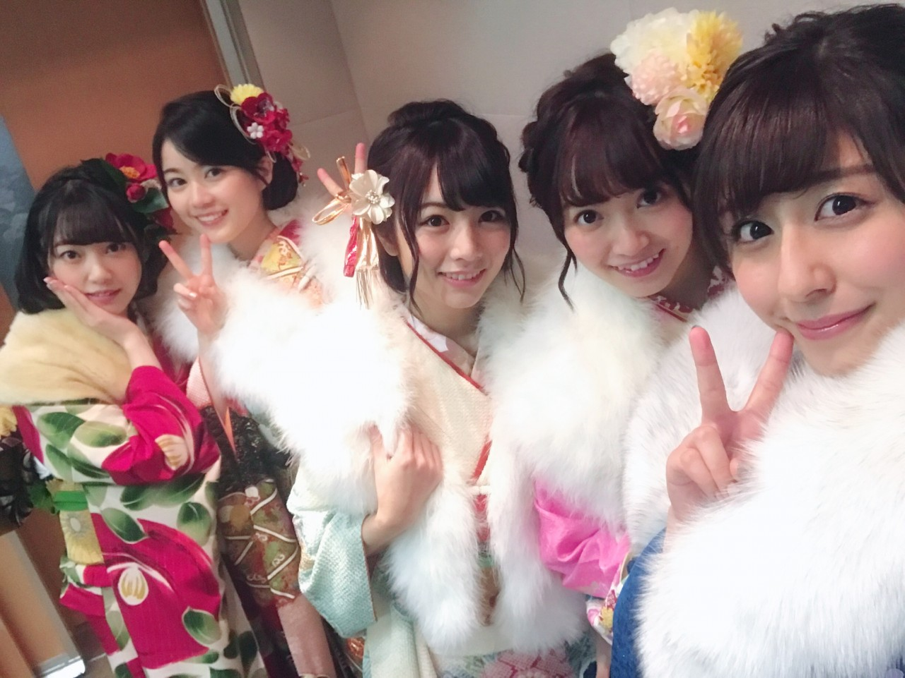
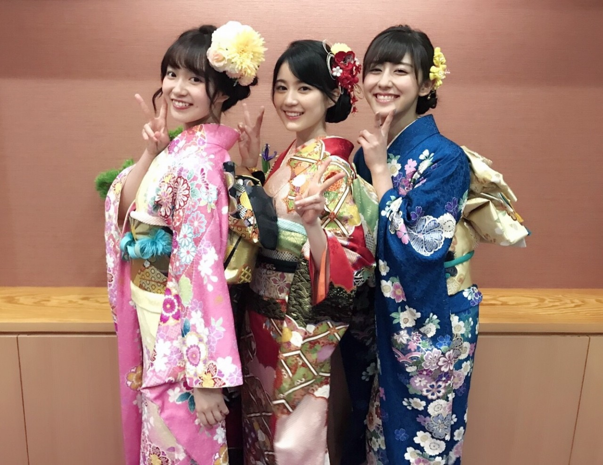
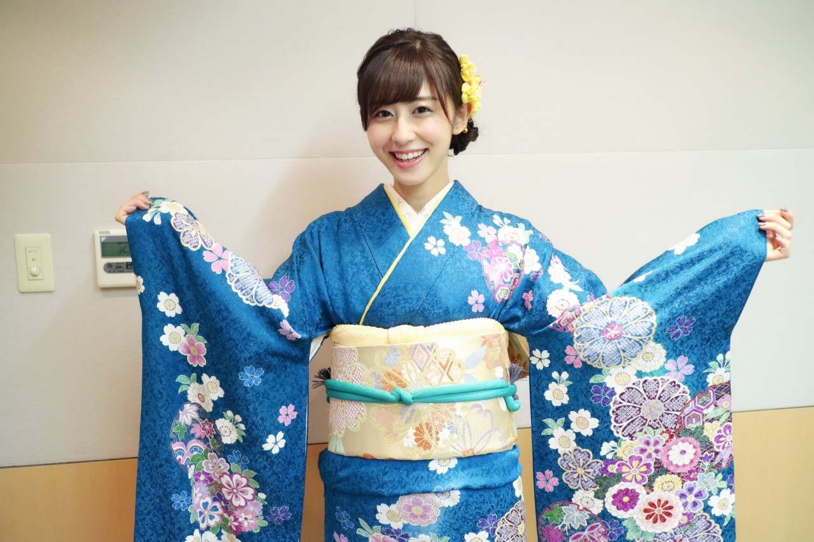

| 2017/01 07 Sat | 乃木神社にて成人式。 |
ちはるーむへようこそ。
2017年1月7日、乃木神社にて
成人式を迎えることができました！

96年組♡
マイペース世代⁉︎ということで
着物の色や柄もそれぞれ違ったり
抱負もそれぞれ違ったり
よく話が交錯することも多い5人ですが(笑)
この5人で成人式を迎えることができて
本当に幸せです。
中学3年生で乃木坂に入ってから
年上メンバーのみんなの成人式の写真を
見るのが毎回楽しみで
ずっと憧れていたので、
(振袖の色とかも凄い考えてたの笑)
自分もこの場に立てて嬉しく思います！

中3組が、もう成人ですよ〜笑
時が経つのはあっという間。
でも多分このままもっと大人になっても
私たちは中3組のままなんだろうな、
ずっと変わらずにいたいな、とも思います。

振袖のお色は青にしました！
青い着物って中々着る機会もないですし
大人な感じがして...とっても嬉しい◎
よく見たらキラキラのラメが入っていたり
ところどころに絞りが入っていたり
物凄く綺麗でした。
着物の着付け、
いつか自分一人で出来るようになりたい。
そして着物のお仕事もいつかやってみたいです。

誕生日は2月17日なので、
本当に成人になるのはまだ少し先ですが
今日振袖を着て改めて
気持ちが引き締まりました。
日々精進しつつ
文武両道を目指しながら
毎日を楽しんで過ごしたいです！
人に優しく出来て、思いやりのある、
内面から綺麗でセクシーな
素敵な大人の女性になりたいな。
なれるかはわからないけど...
頑張ります☺︎
目指せ！外見も中身も大人計画！
---------------------------------------♡
♬ ChihaMusic
「キレイな唄」阿部真央さん
ハレの日に聴きたくなる
爽やかで涼しげで軽やかで
本当に"キレイな唄"。
聞いていると背中を押されます。
頑張ろうって思える大切な曲。
"走る君の背中にそっと羽をあげよう
少しは軽くなったろ？
忘れないで、独りじゃない"
独りじゃない、
背中を押してくれる方々のために
ただまっすぐ進んでいこうと思える。
まだ成人式の余韻に浸っていたいので
今後のブログも今日の写真を
沢山載せると思います☺︎
応援してくださっている皆さんに
晴れ着姿を見せる事が出来て本当に嬉しい。
少しは恩返しできたかな。
おやすみ
斎藤ちはる
コメント(504)
2017/01/07 23:54